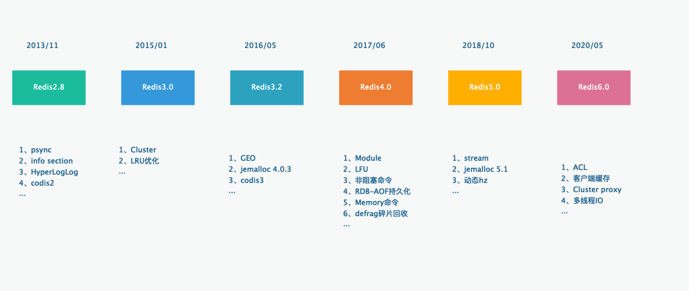

Redis6
Contents
redis6

ACL（访问控制权限）
AUTH
在 Redis 6.0 中引入了 ACL（Access Control List) 的支持，在此前的版本中 Redis 中是没有用户的概念的，其实没有办法很好的控制权限，redis 6.0 开始支持用户，可以给每个用户分配不同的权限来控制权限。
Redis AUTH 命令在 Redis 6 中进行了扩展，因此现在可以在双参数形式中使用它：
|
|
当它根据旧形式使用时，即：
|
|
发生的事情是，用于身份验证的用户名是"默认"的，因此仅指定密码就意味着我们要针对默认用户进行身份验证。这提供了与过去的完美向后兼容性。
ACL
使用场景
- 您希望通过限制对命令和密钥的访问来提高安全性，以便不受信任的客户端没有访问权限，而受信任的客户端只有对数据库的最低访问级别，以便执行所需的工作。例如，某些客户端可能只能执行只读命令。
- 您希望提高操作安全性，以便不允许进程或人员访问 Redis，因为软件错误或手动错误而损坏数据或配置。例如，从 Redis 获取延迟作业的工作线程没有理由能够调用FLUSHALL命令。
使用配置
有两种方法可以将用户存储在Redis配置中，一种是 redis.conf 中配置，一种是使用一个独立的外部 acl 文件，这两种方式不兼容，只能选择一种方式
|
|
当要使用外部ACL文件时，需要指定名为的配置指令 aclfile，如下所示：
|
|
当仅在 redis.conf 文件内部直接指定几个用户时，可以使用CONFIG REWRITE以便通过重写将新的用户配置存储在文件中。
但是，外部ACL文件功能更强大。可以执行以下操作：
-
使用
ACL LOAD重新加载外部 ACL 文件，通常在你手动修改了这个文件，希望 redis 重新加载的时候使用，需要注意的是要确保 acl 文件内容的正确性 -
使用
ACL SAVE将当前 ACL 配置保存到一个外部文件
规则
启用和禁止用户：
-
on：启用用户：可以作为此用户进行身份验证。 -
off：禁用用户：无法再对此用户进行身份验证，但已通过身份验证的连接仍将有效。请注意，如果默认用户被标记为off，则新连接将启动，但不会经过身份验证，并且将要求用户使用AUTH选项发送 AUTH 或HELLO，以便以某种方式进行身份验证，而不管默认用户配置如何。
允许和禁止命令：
-
+<command>：将命令添加到用户可以调用的命令列表中。可用于允许子命令（例如"+config|get"）。| -
-<command>：将命令删除到用户可以调用的命令列表中。可用于阻止子命令（例如"-config|set"）。| -
+@<category>：添加此类类别中要由用户调用的所有命令，有效类别为@admin，@set，@sortedset等。依此类推，通过调用ACL CAT命令查看完整列表。特殊类别@all表示所有命令，包括服务器中当前存在的命令以及将来将通过模块加载的命令。 -
-@<category>：喜欢但从客户端可以调用的命令列表中删除命令。+@<category> -
+<command>|first-arg：允许其他禁用命令的特定第一个参数。请注意，这种形式不允许像 ，而只允许以 “+” 开头的加法。-SELECT|1 -
allcommands：+@all的别名。请注意，这意味着能够执行通过模块系统加载的所有未来命令。 -
nocommands：-@all 的别名。
允许和禁止某些键：
-
~<pattern>：添加可作为命令的一部分提及的键模式。例如，允许所有键。该模式是一种球形模式，类似于KEYS。可以指定多个模式。~* -
allkeys：的别名。~* -
resetkeys：刷新允许的键模式列表。例如，ACL 将导致客户端只能访问与模式匹配的密钥。~foo:* ~bar:* resetkeys ~objects:*objects:*
允许和禁止发布/订阅频道：
-
&<pattern>：添加用户可访问的发布/订阅频道的 glob 样式模式。可以指定多个通道模式。请注意，模式匹配仅针对PUBLISH和SUBSCRIBE提到的通道，而PSUBSCRIBE要求其通道模式与用户允许的通道模式之间的文字匹配。 -
allchannels：别名允许用户访问所有发布/订阅频道。&* -
resetchannels：刷新允许的通道模式列表，如果用户的 Pub/Sub 客户端不再能够访问其各自的通道和/或通道模式，请断开这些客户端的连接。
为用户配置有效密码：
-
><password>：将此密码添加到用户的有效密码列表中。例如，将"mypass"添加到有效密码列表中。此指令清除nopass标志（见后面）。每个用户都可以拥有任意数量的密码。>mypass -
<<password>：从有效密码列表中删除此密码。如果您尝试删除的密码实际上未设置，则会发出错误。 -
#<hash>：将此 SHA-256 哈希值添加到用户的有效密码列表中。此哈希值将与为 ACL 用户输入的密码的哈希值进行比较。这允许用户在文件中存储哈希值，而不是存储明文密码。仅接受 SHA-256 哈希值，因为密码哈希必须为 64 个字符，并且仅包含小写十六进制字符。acl.conf -
!<hash>：从有效密码列表中删除此哈希值。当您不知道哈希值指定的密码，但希望从用户中删除密码时，这很有用。 -
nopass：删除用户的所有设置密码，并将用户标记为不需要密码：这意味着每个密码都将针对此用户工作。如果此指令用于默认用户，则每个新连接都将立即与默认用户进行身份验证，而无需任何显式 AUTH 命令。请注意*，resetpass*指令将清除此条件。 -
resetpass：刷新允许的密码列表。此外，还删除了无通行证状态。重置传递后，用户没有关联的密码，如果不添加一些密码（或稍后将其设置为*nopass），*就无法进行身份验证。
注意：未使用nopass标记且没有有效密码列表的使用实际上无法使用，因为无法以此类用户身份登录。
重置用户：
reset执行以下操作：重置传递、重置密钥、重置通道、关闭、-@all。用户将返回到创建后立即具有的相同状态。
命令
-
ACL LIST查看用户及其启用规则 -
ACL CAT查看支持的权限分类列表 -
ACL CAT <category>查看权限细分类 -
ACL SETUSER <username>设置用户 -
ACL GETUSER <username>查看用户详情 -
ACL DELUSER <username>删除用户 -
doc：ACL – Redis
client side caching（客户端缓存）
|
|
Redis 客户端缓存支持称为跟踪，有两种模式：
-
在默认模式下，服务器会记住给定客户端访问了哪些密钥，并在修改相同密钥时发送失效消息。这会占用服务器端的内存，但仅针对客户端在内存中可能具有的一组键发送失效消息。
-
相反，在广播模式下，服务器不会尝试记住给定客户端访问的密钥，因此此模式在服务器端根本不会占用任何内存。相反，客户端订阅键前缀（如 或 ），并且每次触摸与此类前缀匹配的键时都会收到通知消息。
object:user:
NOLOOP选项
我们的客户端修改自己已缓存的key的时候也会收到这个key的过期信息，事实上这个客户端是不需要收到该消息的，这造成了浪费，因此我们可以使用NOLOOP选项将该客户端设置为：本客户端修改的key不会收到相关的失效信息。
|
|
Cluster proxy（代理集群）
将集群抽象为单实例，客户端不需要知道集群中的具体节点个数和主从身份，通过代理访问集群，就像访问单机Redis一样。同时集群代理也能解决在集群模式下multiple操作的限制及跨slot操作限制(如mget,mset…)。
Redis集群代理的特点：
-
自动化路由：每个查询被自动路由到集群的正确节点；
-
多线程：多路复用通信模型，每个线程都有自己的集群连接；
-
顺序性：在多路复用上下文中，保证查询的执行和应答顺序；
-
无感知更新集群信息：当请求/重定向错误时会自动更新集群信息，客户端提交的查询会在集群信息更新完成后重新执行，对于客户端来说这一切是无感的，客户端不会收到请求/重定向的错误信息，而是直接收到查询的结果；
-
跨槽/节点查询：支持跨slot或node的mutiple操作key，如mget,mset,del等。但由于mset,del会破坏原子性，因此该配置默认关闭；
-
ACL：支持连接开启了ACL的Redis集群；
-
DBSIZE：对于没有指定节点的命令，将会合并所有的信息的总和并返回；

doc：https://blog.csdn.net/wsdc0521/article/details/107034173
多线程 IO
为什么要使用多线程：
- 硬件技术提升，CPU 利用率低
- 业务复杂，QPS 需求提升
从Redis自身角度来说，因为读写网络的read/write系统调用占用了Redis执行期间大部分CPU时间，瓶颈主要在于网络的 IO 消耗, 优化主要有两个方向:
- 提高网络 IO 性能
- 使用多线程充分利用多核
开启多线程
Redis6 默认情况下不开启多线程，如需开启需要修改redis.conf配置文件：
|
|
多线程下的工作流程

Redis 6 中的多线程 主要在处理 网络 I/O 方面，对网络事件进行监听，分发给 work thread 进行处理，处理完以后将主动权交还给 主线程，进行 执行操作，当然后续还会有，执行后依然交由 work thread 进行响应数据的 socket write 操作
Author longtb
LastMod 2022-03-30